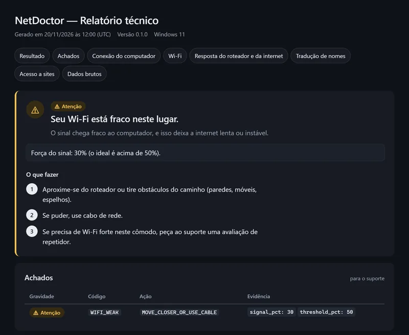
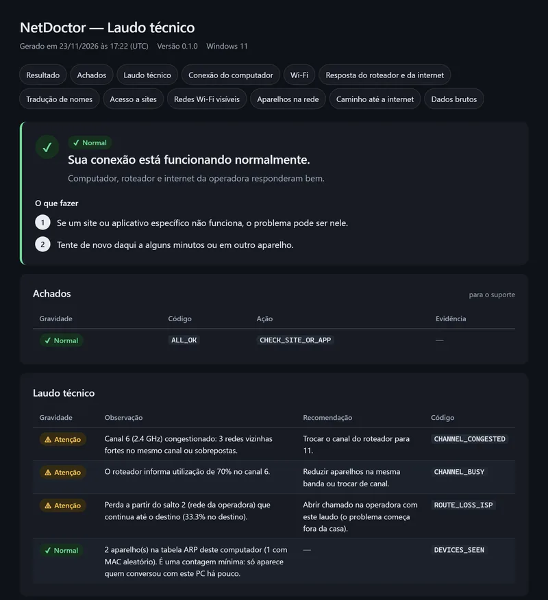

Bruno StrapazzonAutomation and applied AI · strapazzonbruno@gmail.com · +55 (54) 99983-8415 · linkedin.com/in/brunostrapazzon · github.com/brunostrapazzon · brunostrapazzon.github.io/en/
Automation and AI you can check.
I study Computer Science at FIAP in Brazil on a scholarship earned through ENEM, the national university entrance exam, and I have worked in IT support since 2023. In my projects, AI goes where it helps; where it could be wrong, rules, tests and metrics come in. And when the system doesn’t know, it says it doesn’t know.
Available for remote roles
Also on LinkedIn, GitHub and as a PDF resume.
NetDoctor: rules make the diagnosis, AI only explains it
It came from my day-to-day in support: most “my internet isn’t working” tickets are weak Wi-Fi, a frozen router or DNS, and finding that out took a technician. NetDoctor automates this triage on Windows in about 10 seconds and explains the cause in plain Portuguese.
-
The AI decides nothing
The diagnosis comes from deterministic rules: the first test that fails is the cause. The language model (Groq, OpenAI or local Ollama) only rewrites the explanation. The same problem always gives the same result.
-
The AI’s answer is validated
It must return one sentence and 1 to 3 actions, within the length limit. If it breaks the format, takes too long or fails, the app uses the built-in text, without showing the user an error.
-
Privacy enforced by tests
The model receives only a closed list of fields: problem code, severity and numbers. Network name, IPs, MAC and computer name never leave the machine, and there are tests that break if that changes.
-
End-to-end automation
It reads Windows command output in Portuguese and in English, runs the tests in parallel and publishes itself: GitHub Actions tests it, builds the executable and creates the release.
The rules, step by step
simulationPick a problem and watch the thread pass through the tests:
- Computer connectedcable or Wi-Fi on
- Address receivedthe router handed out an IP
- Router respondsping to the router
- Provider’s internetping outside the home
- Site namesDNS translates addresses
- Wi-Fi signalstrength and interference
A simplification of the project’s real rules. The explanation above is the built-in text; with the AI on, it rewrites only that text, never the diagnosis.
Client report relatorio.html
The cause in one sentence, the number behind it and what to do, in plain Portuguese.


Technical report for support laudo.html
Congested channel, loss that starts at the provider and devices on the network, each finding with a recommendation and a code.


Screenshots made with the project’s test data, not from a real network.
Citizen Assist AI: an assistant that would rather not answer than guess
It guides citizens on public services using only official sources. Built by a team of 3 at FIAP’s Global Solution, in 2026. Search with an inverted index and typo correction, related topics through a graph and paths between topics with Dijkstra, in pure Python and working offline.
-
Measured, not assumed
An evaluation script runs 30 test questions and computes accuracy, coverage, abstention and response time. The numbers in this section come from that run.
-
The tests found the error that mattered
The first version answered “cake recipe” with the guidance for the CPF (Brazil’s taxpayer ID). The second started showing options with a low-confidence warning, or abstaining, when the knowledge base doesn’t support the answer.
-
Two answer styles, compared
A direct model and one with context and caveats, measured on the same questions: both give a source and a warning in 100% of cases. The one with caveats became the default.
Data, models and systems, as a team
-
EV ChargeOps
Measures, validates and splits the electric car charging bill in residential condominiums. It reads the charger over Modbus, links the session to the unit by RFID and uses an anomaly detection model (Isolation Forest) to block suspicious readings before billing. In tests with simulated data, it blocked all 12 problem sessions without blocking any normal one.
-
ARES-VII Monitoring
Reads telemetry from a simulated Mars mission, prioritizes alerts with a queue and a stack, and forecasts the energy reserve with a hand-written linear regression, in pure Python.
Repository -
SCIC Aurora Siger
Latency analysis, forecasting, alert prioritization with a heap and prefix search with a trie.
Repository
Computer Science at FIAP
FIAP · Bachelor’s in Computer Science
2026 – 2029 (expected) · online · ENEM scholarship
The team projects on this page came from the course: Citizen Assist AI at the Global Solution, EV ChargeOps at the Enterprise Challenge with GoodWe, and the ARES-VII and SCIC monitoring systems.
- Certifications
- Programming Logic (FIAP, 2026) · Communication (FIAP, 2026) · Getting Started in Programming (Alura, 2026)
- Languages
- Native Portuguese · English B2 (TOEFL ITP, 2024)
- Awards
- Two bronze medals at OBMEP, the Brazilian Public Schools Mathematics Olympiad
Before I automate, I help the person who has the problem
Oct. 2023 – present
IT Assistant · AC Informática
- Technical support and networking at a company that represents an internet provider in Paraí (RS), Brazil: about 100 clients served and 20 networks configured.
- It’s where the problems I automate come from. NetDoctor was born from the pattern that repeated most in the tickets.
- I also maintain computers and printers and manage clients’ internal networks.
- AI and data
- Language model APIs (Groq, OpenAI, Ollama), output validation, evaluation with metrics, anomaly detection
- Automation and engineering
- Python, pytest, Git, GitHub Actions, PyInstaller, Streamlit, Windows command automation
- Infrastructure
- TCP/IP networks, DHCP, DNS, Wi-Fi, Windows, user support
I’m looking for my first remote role in automation or applied AI.
- E-mailstrapazzonbruno@gmail.com
- Phone and WhatsApp+55 (54) 99983-8415
- LinkedInbruno-trevizan-strapazzon
- GitHubbrunostrapazzon
- ResumeDownload as PDF